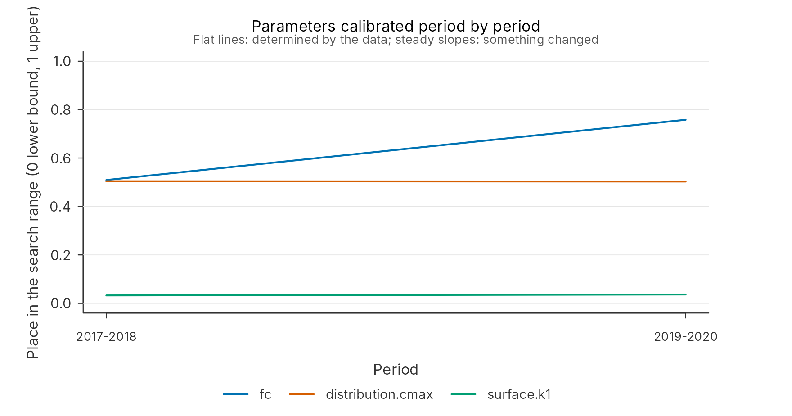

Will the calibration hold? Stress tests
pdmS7 documentation
Source:vignettes/stress-tests.Rmd
stress-tests.RmdA calibration describes the years it was fitted to. The model will be used in other years: wetter, drier, after the gauge has been changed or the land drained. Two tests show whether a calibration will hold: calibrate on one kind of year and score another, and calibrate period by period and watch the parameters.
The catchment
The synthetic catchment of Counting every error fairly, over four years.
rain <- synthetic_rain("2016-10-01", years = 4, dt = 1, seed = 5)
truth <- modifyList(pdm_presets("standard"), list(area_km2 = 25))
model <- pdm_from_config(truth)
forcing <- rain[c("time", "rain", "pet")]
set.seed(8)
flow <- run_pdm(model, forcing[c("rain", "pet")], initial_state(model, 0.5))$output$q_m3s
observed <- flow * exp(rnorm(length(flow), 0, 0.15))
start <- modifyList(truth, list(fc = 0.8))
lower <- c(fc = 0.6, distribution.cmax = 100, surface.k1 = 1)
upper <- c(fc = 1.4, distribution.cmax = 500, surface.k1 = 30)Dry years against wet years
The differential split-sample test (Klemeš, 1986) sorts the complete water years by rain, calibrates on the drier half and scores the wetter half, then the reverse. A model fit for the floods of a wetter future should keep its score when it moves from dry years to wet; a large drop means the calibration leans on conditions it will not always meet.
sst <- split_sample_test(start, forcing, observed, lower, upper, objective = "boxcox",
start = "soil", control = list(maxit = 40))
sst$years
#> $dry
#> [1] 2019 2020
#>
#> $wet
#> [1] 2017 2018
sst$scores[, c("calibrated_on", "scored_on", "nse", "boxcox_nse", "volume_error")]
#> calibrated_on scored_on nse boxcox_nse volume_error
#> 1 dry dry 0.9679109 0.9706972 0.0052968353
#> 2 dry wet 0.9693745 0.9735671 0.0098805829
#> 3 wet dry 0.9677370 0.9706252 0.0009787743
#> 4 wet wet 0.9697640 0.9736343 0.0056755582
sst$parameters
#> calibrated_on fc distribution.cmax surface.k1
#> 1 dry 1.002721 301.5395 2.010604
#> 2 wet 1.006172 301.7608 1.958977Each calibration is scored twice, on its own years and on the others. Read the drop from its own years to the others, in both directions. Here the model is right by construction, so the scores barely move. On a real record a common failure is the volume: a calibration on dry years may let the soil store swallow too much rain, and the volume error then grows in the wet years.
split = "halves" uses the first and second halves of the
record instead: the classic split sample, which tests change over time
rather than climate.
Parameters period by period
parameter_drift() cuts the record into runs of
consecutive water years and calibrates each on its own. Parameters the
data determine stay put; a steady drift points to a change in the
catchment or the record that one long calibration would average
away.
To show it working, a record in which something changes halfway: the
rainfall factor fc goes from 1.0 to 1.2 in October 2018, as
it might if a rain gauge were replaced by one that catches more.
changed <- pdm_from_config(modifyList(truth, list(fc = 1.2)))
s0 <- initial_state(model, 0.5)
early <- run_pdm(model, forcing[c("rain", "pet")], s0)$output$q_m3s
late <- run_pdm(changed, forcing[c("rain", "pet")], s0)$output$q_m3s
cut_at <- which(forcing$time >= as.POSIXct("2018-10-01", tz = "UTC"))[1]
shifted <- c(early[seq_len(cut_at - 1)], late[seq.int(cut_at, length(late))]) *
exp(rnorm(length(late), 0, 0.15))
drift <- parameter_drift(start, forcing, shifted, lower, upper, periods = 2,
objective = "boxcox", start = "soil", control = list(maxit = 40))
drift
#> Parameters calibrated period by period
#> period from to fc distribution.cmax surface.k1
#> 1 2017 2018 1.007 301.5 1.947
#> 2 2019 2020 1.206 301.2 2.059
#> Change from the first period, as a share of each parameter's range
#> period from to fc distribution.cmax surface.k1
#> 1 2017 2018 0.00 0.00000 0.0000
#> 2 2019 2020 0.25 -0.00091 0.0039
plot(drift)
fc moves from 1.01 to 1.21, a quarter of its search
range, between the two periods, and the others stay put: the test finds
the change and says which parameter absorbed it. On a real record this
is how a change of rain gauge, of rating or of land use shows up: a
tipping-bucket gauge replaced by a weighing gauge that catches more
rain, for example, appears as a step in fc. With three or
more periods a steady slope separates a real trend from noise.
What to do with the answer
- A drop from dry to wet: calibrate on a record that includes wet years, weight the floods with an event or threshold objective, or choose the model on forecasts in wet years (Choosing a model as a forecaster).
- Drift in one parameter: find what changed. If the change is in the record, such as a new gauge, calibrate on the years since. If it is in the catchment, the recent years describe the catchment that will be forecast.
- Drift in every parameter: the parameters are poorly determined (Which parameters can the record determine?); fix the weak ones and test again.
Cautions
- Each half must hold floods. A test whose wet half has no large flood says little about floods.
-
The tests cost a calibration each, two for the
split sample and one a period for the drift. The faster stages of
pdm_stages()(method = "dds",coarse_dt) help on long 15-minute records.